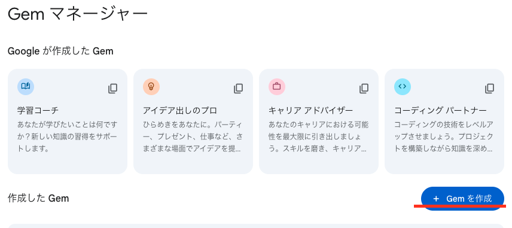

💻 PCでのセットアップ
パソコンでみらいちゃんを使い始める方法をご案内します。難しい操作は一切ありません！
🔧 必要なもの
- インターネットに接続されたパソコン
- Google Chrome、Microsoft Edge、Safari などのウェブブラウザ
- Googleアカウント（Gmail のアカウント）
📧 ステップ1: Googleアカウントの準備
みらいちゃんはGoogle Geminiというサービスを使用します。まずはGoogleアカウントが必要です。
既にGmailをお使いの場合
普段お使いのGmailアカウントでそのまま利用できます。ステップ2に進んでください。
Googleアカウントをお持ちでない場合
- Google アカウント作成ページにアクセス
- 「アカウントを作成」をクリック
- 必要な情報を入力してアカウントを作成

📸 Googleアカウント作成画面：姓名を入力して「次へ」をクリックします
🌟 ステップ2: Google Geminiにアクセス
- ウェブブラウザで https://gemini.google.com/ にアクセス
- Googleアカウントでログイン
- 利用規約に同意
⚙️ ステップ3: みらいちゃんの設定
Google Geminiにアクセスできたら、みらいちゃんを設定します。ここでは、管理者から受け取ったプロンプトとナレッジファイルを使って、ご自身のGeminiに「みらいちゃん」を手動で設定する方法を説明します。少し手順が多いですが、一つずつ丁寧に行いましょう。
3.1. 準備するもの
まず、以下のファイル一式を準備してください。
- メインプロンプト: 別ウィンドウで開きます。中のテキストを全てコピーしてください。
- 以下の2つのナレッジファイルを、お使いのPCにダウンロードします。これらは、みらいちゃんがあなたをサポートするための重要な知識です。
3.2. 新しい Gem の作成
- Geminiの画面左側にある「Gems」というメニューをクリックします。
- 「Gemを作成」をクリックします。

📸 Gemini Gems作成画面：「Gemを作成」ボタンをクリックして新しいGemを作成します
3.3. プロンプトとナレッジの設定
Gem の設定画面が開いたら、以下の手順で設定します。
① 名前の設定
「Gemに名前をつけてください」という欄に、みんなの成長パートナー「みらいちゃん」 と入力します。
② プロンプト（指示）の設定
- 先ほど開いたメインプロンプトのページで、「プロンプトをコピー」ボタンをクリックします。
- Geminiの「指示」と書かれた大きな入力欄に、コピーした内容を貼り付けます (Windowsなら Ctrl+V, Macなら Cmd+V)。
③ 知識の追加
- 「指示」欄の下にある「知識」のセクションを探します。
- 「＋」（ファイルを追加） をクリックします。
- ファイル選択画面が開いたら、先ほどダウンロードした2つのナレッジファイル（業務知識ファイル, ナレッジガイド）を選択し、順番にアップロードします。
3.4. 保存と最終確認
- 画面右上の「保存」または「更新」ボタンをクリックして設定を保存します。
- 【重要】保存後、ファイルが正しく登録されているか必ず確認しましょう。
- 一度前の画面に戻り、作成した「みらいちゃん」の編集メニュー（鉛筆マーク）を開きます。
- 「知識」の欄に、アップロードした2つのファイル名が表示されているかを確認してください。
- もしファイルが不足している場合は、お手数ですが再度「＋」から追加し、もう一度保存してください。（登録したはずのファイルが、たまに消えてしまうことがあります）
✅ ステップ4: 動作確認
みらいちゃんが正しく動作するか確認してみましょう。
- チャット欄に「こんにちは」と入力
- みらいちゃんから温かい挨拶が返ってくることを確認
- 「メニューを見せてください」と入力
- 選択肢が表示されることを確認
✦ 📊 状態: 意図[初回相談] | モード[発散] | 現在地[ニーズ確認] | ゴール[成長方向性決定]
こんにちは！みんなの成長パートナー「みらいちゃん」です🌟
キャリアショップでのお仕事、毎本当にお疲れ様です！✨
お客様と向き合うお仕事って、やりがいがある一方で、色々な課題もありますよね。
今日は、あなたの「もっとこうなりたい！」を心理学に基づいた専門家チームと一緒に実現していきませんか？🌱
どちらを選んでも大丈夫です！あなたのペースで進めていきましょう。
番号を教えてくださいね😊
💡 便利な使い方のヒント
📌ブックマークに追加
頻繁に使用する場合は、ブラウザのブックマークに追加しておくと便利です。
🖥️デスクトップショートカット
Chromeの場合、「その他のツール」→「ショートカットを作成」でデスクトップにアイコンを作成できます。
🔄複数タブでの利用
複数の相談を同時に進めたい場合は、新しいタブでGeminiを開いて利用できます。
💾会話の保存
重要な会話は、ブラウザの印刷機能でPDFとして保存できます。
🔧 トラブルシューティング
ログインできない場合
- Googleアカウントのパスワードを確認
- ブラウザのキャッシュをクリア
- 別のブラウザで試してみる
みらいちゃんが正しく動作しない場合
- ページを更新（F5キーまたは再読み込みボタン）
- プロンプトの設定を再確認
- 新しいチャットを開始
動作が重い場合
- 他のタブやアプリケーションを閉じる
- インターネット接続を確認
- 時間を置いてから再度アクセス
🎉 セットアップ完了！
お疲れさまでした！これでパソコンでみらいちゃんを使用する準備が整いました。
次は基本的な使い方を確認して、実際に使ってみましょう。